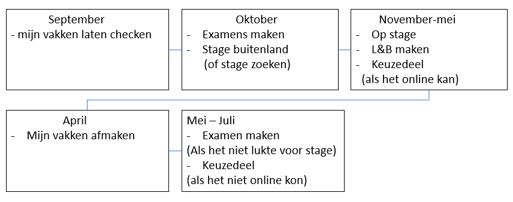

Jozua's 2021/2022 planning
Dit is mijn planning voor dit school en mijn reflectie van het afgelopen 2 jaar kort samengevat.
ik ben nu in me derde jaar dus hopelijk ook mijn laatste jaar en sinds corona het studeren wat moeilijker maakte
samen met persoonlijken problem moet ik ook nog dingen inhalen van vorig jaar en ik hebt dat allemaal hier ingemaakt

dit is mijn schema
voor de opkomende schooljaar